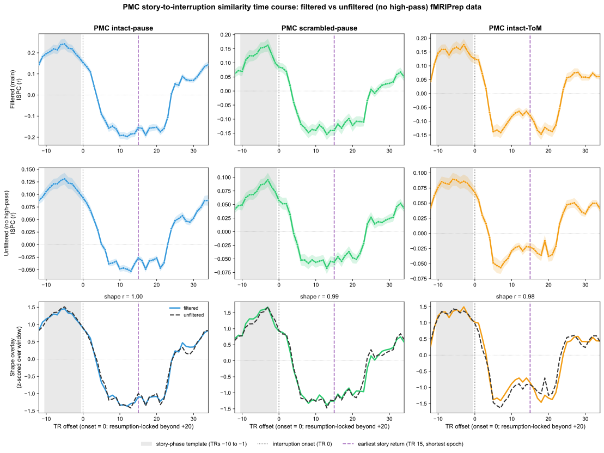

The story-to-interruption inversion has a characteristic time course: the posterior medial cortex (PMC) similarity to the preceding story pattern falls from positive, through zero, to a negative trough within the interruption and then recovers (the “sustained pattern” line of Figure 3). A post-stimulus hemodynamic undershoot combined with the temporal high-pass filter has been raised as an alternative source of such an anticorrelation. If that combination were responsible, removing the high-pass filter should change the time course. This report shows that it does not.
We recomputed the Figure 3 template-similarity time course on the unfiltered fMRIPrep derivative (no high-pass filter, 3 mm space, 4 mm smoothing; each voxel z-scored across the whole run, the same normalization as the main data), using the identical procedure: for each participant, the 10-TR pre-onset story template was correlated, TR by TR, with the across-participant average pattern of the other participants at each TR offset around interruption onset (a 1-vs-others inter-subject pattern correlation). Offsets beyond +20 TRs are re-anchored to each epoch's own story-resumption point (the Figure 3 convention), so the right half of each curve is resumption-locked. The filtered time course reproduces the published Figure 3 curve (validation correlations in the last column of the table, r ≥ 1.00 in every condition).

Rows, top to bottom: (1) the filtered main-pipeline inter-subject pattern correlation (ISPC) time course; (2) the unfiltered (no high-pass) ISPC time course, computed and plotted the same way (note the smaller y-range, the unfiltered correlations are weaker in absolute terms); (3) the two curves z-scored over the plotted window so only shape is compared. In every panel the gray band marks the pre-onset story-phase template window (TRs −10 to −1), the black dotted line marks interruption onset (TR 0), and the purple dashed line marks the earliest story return (TR 15, the shortest interruption epoch), beyond which the window starts to re-enter the story for that epoch.
| Condition | Filtered trough (TR offset) |
Unfiltered trough (TR offset) |
Shape correlation (filtered vs unfiltered) |
Validation r (vs published Fig. 3) |
n (filt / unfilt) |
|---|---|---|---|---|---|
| intact-pause | 12 (r = -0.197) | 13 (r = -0.053) | 1.00 | 1.000 | 19 / 19 |
| scrambled-pause | 13 (r = -0.154) | 13 (r = -0.067) | 0.99 | 1.000 | 19 / 19 |
| intact-ToM | 18 (r = -0.147) | 7 (r = -0.057) | 0.98 | 1.000 | 19 / 19 |
Across conditions the two time courses are highly correlated in shape (r = 0.98 to 1.00 over the plotted window) even though the unfiltered correlations are several times weaker in absolute terms (troughs near r = -0.06 to -0.07 unfiltered versus -0.20 to -0.15 filtered). In intact-pause and scrambled-pause the anticorrelation reaches its trough at the same time offset with or without the high-pass filter (TR 12 vs 13, and TR 13 vs 13). In intact-ToM the interruption is filled by an active task and the trough is broad and shallow, so its single lowest point is less stable across the two pipelines (TR 18 vs 7), yet the whole rise-and-fall still tracks closely (shape r = 0.98; see the normalized overlay). Two conclusions follow. First, because the effect is present with no temporal filtering, the high-pass filter cannot produce the inversion. Second, the dynamics are a fast dip and recovery locked to the interruption, not the slow monotonic return of a post-stimulus hemodynamic undershoot, so a combination of undershoot and filtering is also incompatible with the observed time course.